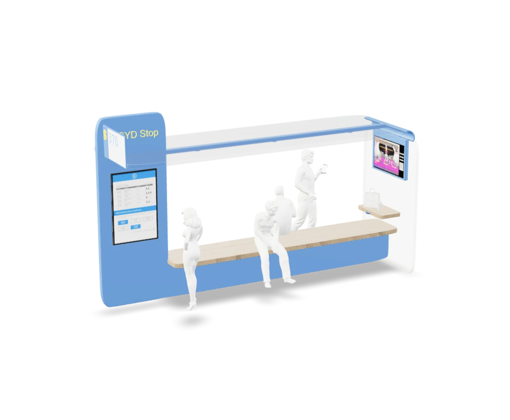
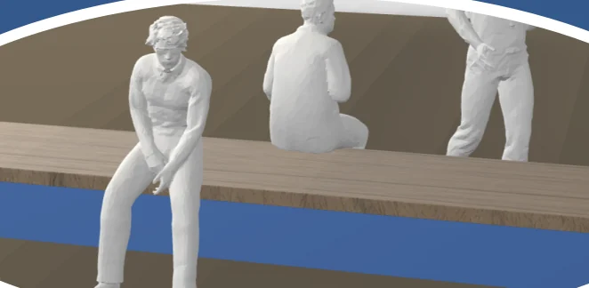
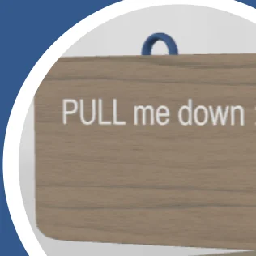
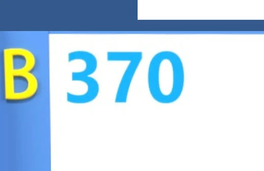
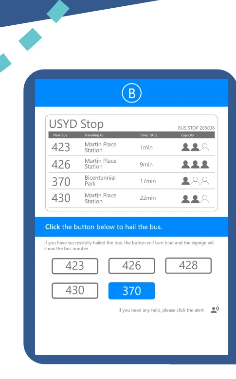
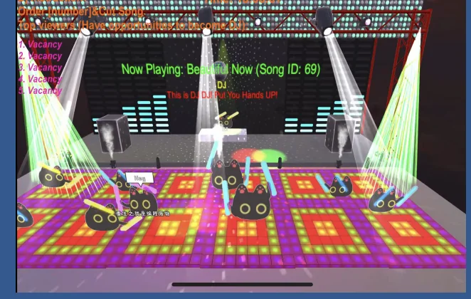
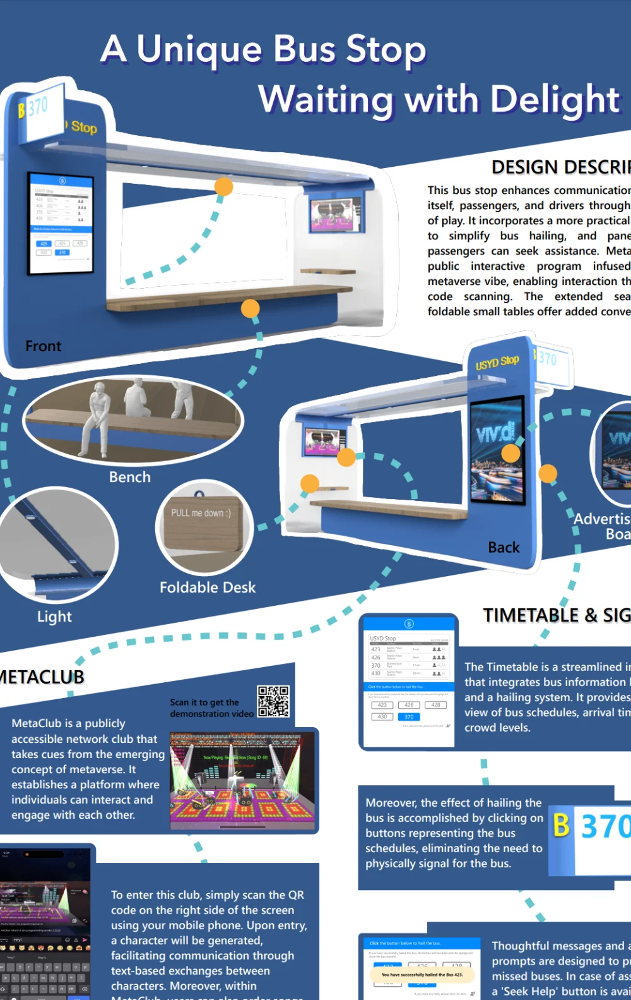

01
A driver still has to look
The sign only works if the driver scans it. At 40 km/h on a busy road that is a real assumption, and we never tested it with an actual driver.

Project 03 · Product & interface design
A Sydney bus only stops if you hail it. Look away for a second — head down in work, on a call — and it drives straight past. This stop signals the driver for you, carries a timetable that most Sydney stops still do not have, and gives you a screen to pass the wait.
Timetable · Signage · Prototype
01 — The short version
You choose your route on the timetable screen. The route sign above the bus stop lights up with that number. A driver a hundred metres away sees it and knows this stop is worth stopping at. Nobody waves, nobody runs, and nobody stands up for a bus that was never going to stop.
02 — Why this exists
In 2021–22, buses moved 112 million passengers across New South Wales — 40% of all public transport trips, second only to trains. For most of those journeys the last hundred metres are the anxious part: you cannot tell whether the driver has seen you, and the driver cannot tell whether you want this bus.
“But it’s just so unreliable. There’s no point even looking at the timetable because it’s never there when you rock up and, when it does, it’s always full.”
“When it’s busy, sometimes the driver doesn’t even stop because it’s so full you can’t get on and you have to wait forever for the next one.”
What we wrote on the wall after the interviews: the lack of communication between passengers, drivers and bus stops at most of the Sydney bus stops.
03 — Choosing a direction
The research came down to four problems, and almost everything we drew answers one of them: catch the driver’s attention, make the sign easy to find, make the board worth reading, and give people something to do while they wait.
Each of us ran a Crazy 8s round, then we pooled everything: a swing, a game screen, a timetable, a public social site, short videos, a DIY board, an interactive camera. Two rounds of feedback removed what could not survive a footpath — the swing and the game screen were safety problems, the social site was somebody else’s product, and the camera never found a problem to solve.
What survived was not one idea but a set of them that fit together: a stop shaped like a bus, a board that tells you the next four buses, and a sign that tells the driver you are there.
04 — Product display
Every part is here: the bench, the light, the foldable desk, the ad panel, the timetable screen set into the pillar, and the sign above it, run by an Arduino.
Drag to rotate — modelled in Adobe Dimension, ported to the web.
The interface, clickable — hailing, the sign answering, the club. Opens in a new tab.
Open the prototype ↗05 — Why these parts
Five parts make up the stop: the bench, the foldable desk, the sign, the screen, and MetaClub. Each tab shows one of them in place, and why it is there. A light strip runs under the roof as well, though it has no tab of its own.

The bench runs almost the whole length of the stop and seats ten to twelve people. You can sit facing the road or facing in, so someone who is not catching a bus can still sit down, with a coffee, out of the rain.

A foldable desk takes a cup or a bag while you check the board. It is printed “PULL me down”, so nobody has to guess that it moves, and it folds flat when it is not in use.

Pick a route on the screen and the sign over the bus stop switches from the stop name to that number — sized to be read from a moving bus, which is the only audience that matters.

The board lists the next four buses with where they are going, how many minutes away they are, and how full each one is. The buttons underneath hail a bus — press one and the sign outside shows that number. If something goes wrong, an alert button calls for help. The back of the same panel carries an ad screen facing the road.

MetaClub has no practical excuse: scan the QR, join the room, and you can talk to whoever else is waiting, queue a song, and watch the DJ. The honest problem with a bus stop is not information, it is having nothing to do.
06 — The poster

07 — What it doesn’t solve
01
The sign only works if the driver scans it. At 40 km/h on a busy road that is a real assumption, and we never tested it with an actual driver.
02
Telling the driver you are there does not create a seat. The capacity dots help you decide, but the bus can still arrive full.
03
The board shows whichever bus is arriving first, in arrival order — which means the stop has to know where every vehicle on the route actually is. That is a GPS unit and a data link on every bus, not on the stop. It turns a street-furniture project into a fleet project, and the cost lands on the operator rather than the council.
04
LED sign, screen and club all draw power around the clock on a public footpath. Who pays for the connection, and who replaces a broken panel, is unsolved.
05
MetaClub was fun to prototype, but “chat with strangers at a bus stop” is a thin reason to add a screen — and a screen that asks you to log in competes with the phone already in your hand. A better version would use the wait itself: something tied to the buses that are actually arriving, rather than a separate place to go.